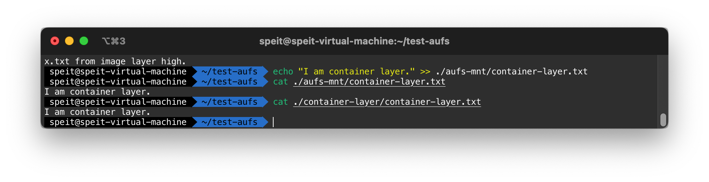

Container Experiment
指南：
Basics - namespace
[speit@host] $ ls -l /proc/1/stat
[speit@host] $ docker inspect --format '{{.State.Pid}}' doc-server
453997
[speit@host] $ ls -alt /proc/453997/ns
Note
'{{.State.Pid}}' 指定了输出格式为pid。docker默认会输出json格式的字符串
doc-server是容器的名称
Warning
可能需要sudo或者root权限来执行命令ls -alt /proc/
将上述命令合二为一：

Basic - cgroup
CPU 限制
首先，查看系统中的cgroup
使用cgcreate创建组
创建一个进程，该进程为死循环
[speit@host] $ while :; do :; done & echo $! > test.pid && cat test.pid
[speit@host] $ top -p $(cat test.pid) -n 1
Note
使用echo $!可以显示上一条命令的pid，这命令旨在保存上一条命令的PID到test.pid中
检查cgroup的各种限制
[speit@host] $ cat /sys/fs/cgroup/cpu/test/cpu.cfs_period_us
[speit@host] $ cat /sys/fs/cgroup/cpu/test/cpu.cfs_quota_us
[speit@host] $ cat /sys/fs/cgroup/cpu/test/tasks
限制CPU
[speit@host] $ echo 30000 | sudo tee /sys/fs/cgroup/cpu/test/cpu.cfs_quota_us
[speit@host] $ sudo cgclassify -g cpu:test $(cat test.pid)
Warning
/sys/fs/cgroup/cpu/test/cpu.cfs_quota_us需要root权限才能修改，因此这里使用 tee 配合管道完成设置
确认CPU的限制
[speit@host] $ cat /sys/fs/cgroup/cpu/test/cpu.cfs_quota_us
[speit@host] $ cat /sys/fs/cgroup/cpu/test/tasks
[speit@host] $ top -p $(cat test.pid) -n 1
删除cgroup，结束进程

IO 限制
首先切换到root账户，执行dd命令，保存该进程的PID到test.pid中
[speit@host] $ sudo -s
[root@host] $ dd if=/dev/sda of=/dev/null > dd.log 2>&1 & echo $! > test.pid
iotop
我们可以看到，硬盘的读取速度是很快的

Note
该命令从/dev/sda设备读取文件并写入/dev/null中。/dev/sdas是磁盘设备，/dev/null则是一个特殊的，代表空设备文件。它通常用于丢弃不需要的数据输出
创建blkio:test组
Note
该命令等价于cgcreate -g blkio:test
设置读写限制，单位为Byte/s，因此这里的限制是1MiB/s
[root@host] $ echo '8:0 1048576' | sudo tee /sys/fs/cgroup/blkio/test/blkio.throttle.read_bps_device
将进程的PID加入cgroup
Warning
在磁盘性能高的主机上，执行该命令时先前创建的读取进程可能已经退出。建议先设置好组的限速，再重新运行dd命令，并立刻将其添加到限制组内
我们可以看到，对设备/dev/sda的读取受到了限制
全部的命令
删除cgroup，结束进程
Basics - rootfs
确认aufs支持
创建一系列测试用的目录
[speit@host] $ mkdir test-aufs && cd test-aufs
[speit@host/test-aufs] $ mkdir aufs-mnt container-layer image-layer-high image-layer-low
[speit@host/test-aufs] $ echo "x.txt from image layer high." > image-layer-high/x.txt
[speit@host/test-aufs] $ echo "I am image layer high" > image-layer-high/image-layer-high.txt
[speit@host/test-aufs] $ echo "x.txt from image layer low." > image-layer-low/x.txt
[speit@host/test-aufs] $ echo "I am image layer low" > image-layer-low/image-layer-low.txt
[speit@host/test-aufs] $ tree .
.
├── aufs-mnt
├── container-layer
├── image-layer-high
│ ├── image-layer-high.txt
│ └── x.txt
└── image-layer-low
├── image-layer-low.txt
└── x.txt
4 directories, 4 files
挂载aufs文件系统
[speit@host/test-aufs] $ sudo mount -t aufs -o dirs=./container-layer:./image-layer-high:./image-layer-low none ./aufs-mnt
检查aufs文件系统的所有挂载情况
[speit@host/test-aufs] $ mount -t aufs
none on /home/speit/test-aufs/aufs-mnt type aufs (rw,relatime,si=9618ff4d613a568a)
Note
9618ff4d613a568a为当前挂载的SI
检查当前挂载的文件系统，注意/sys/fs/aufs/si_9618ff4d613a568a/中9618ff4d613a568a，需要视情况修改
[speit@host/test-aufs] $ cat /sys/fs/aufs/si_9618ff4d613a568a/*
/home/speit/test-aufs/container-layer=rw
/home/speit/test-aufs/image-layer-high=ro
/home/speit/test-aufs/image-layer-low=ro
64
65
66
/home/speit/test-aufs/container-layer/.aufs.xino
Warning
注意这里只有container-layer有读写权限
检查挂载的x.txt内容
[speit@host/test-aufs] $ ls ./aufs-mnt
image-layer-high.txt image-layer-low.txt x.txt
[speit@host/test-aufs] $ cat ./aufs-mnt/x.txt
x.txt from image layer high.
high-layer的文件覆盖了low-layer的文件
测试读写层

测试写时拷贝

测试whiteout删除
全部的测试

最后，使用umount命令停止挂载，可以发现container-layer中新增了image-layer-low.txt的拷贝
Docker - image
以下命令允许我们查找并安装ubuntu:focal镜像
[speit@host] $ docker image ls
[speit@host] $ docker search ubuntu:focal
[speit@host] $ docker pull ubuntu:focal
[speit@host] $ docker image ls | grep ubuntu
[speit@host] $ docker ps -a
使用刚才下载的镜像启动容器，安装iputils-ping工具来使用ping命令
[speit@host] $ docker run -it --rm ubuntu:focal /bin/bash
[root@ct] $ ping 8.8.8.8 # it doesn't work since it doesn't have the ping tool
[root@ct] $ apt-get update >/dev/null && apt-get install -y iputils-ping iproute2 &> /dev/null
[root@ct] $ ping 8.8.8.8 # it works now!
Note
--rm选项旨在当容器停止后删除容器

我们可以将该容器commit为一个新的镜像
[speit@host] $ docker ps -a | grep ubuntu
[speit@host] $ docker commit -m "focal with ping" -a "natrium233" f4e18188ac94 natrium233/focal:with-ping
[speit@host] $ docker login
[speit@host] $ docker image push natrium233/focal:with-ping
Note
natrium233 为自己的用户名
镜像以 natrium233/focal被push到了dockerhub
使用docker image rm删除本地镜像
Docker - advanced
HTTP的docker registry不安全，所以我们部署支持HTTPS的registry
我们需要准备一些材料：
- 寻找/租借/购买一台具有公网IP的云主机
- 注册一个域名
- 申请一个免费的HTTPS证书
在这个实验中，这些材料是这样准备的：
- 主机：云主机是宿舍的服务器，有教育网公网IP
- 域名：域名是
ice6413p.space，绑定了cloudflare的DNS，将registry.ice6413p.space解析到主机上 - 证书：使用Let's Encrypt申请证书，并自动续签。因为教育网公网80/443端口被封锁，无法使用HTTP Challenge，因此改用DNS Challenge
首先，在主机上启动docker registry应用，该应用包括一个registry容器和一个反向代理容器。反向代理容器被用于提供HTTPS
version: '3'
services:
app:
image: 'registry'
container_name: registry-app
restart: always
networks:
- default
expose:
- 5000
proxy:
image: 'jc21/nginx-proxy-manager:latest'
container_name: registry-proxy
restart: always
ports:
# - '15001:80'
- '5000:443'
- '8081:81'
volumes:
- ./proxy-data:/data
- ./proxy-letsencrypt:/etc/letsencrypt
networks:
- default
经过一些配置，我们让registry-proxy代理5000端口的HTTPS请求到registry-app
查看registry的状态
比如说，@davidliyutong在不久前修复了mindoc镜像中的一个issue中提出的bug. 现在他想要将重新编译的镜像上传到这个服务器
Warning
因为registry没有配置认证，所以可以用任意账户密码登陆
打标签，推送
[speit@host] $ docker tag natrium233/mindoc-app-fix:latest registry.ice6413p.space:5000/mindoc-app-fix
[speit@host] $ docker push registry.ice6413p.space:5000/mindoc-app-fix
重新查看
[speit@host] $ curl -X GET https://registry.ice6413p.space:5000/v2/_catalog
{"repositories":["mindoc-app-fix"]}
Warning
这样的一个registry仍然是危险的：任何人都可以用任何凭据登陆。应当考虑使用docker-registry-ldap-proxy类似的方案加入认证机制
Docker - runtime
我们使用docker提供的hello-world镜像来测试Docker运行时
该容器运行后停止，因此docker ps无法查看其状态，需要添加-a参数
[speit@host] $ docker container run -it --rm -p 8888:80 ubuntu:focal
[root@ct] $ apt update && apt install -y apache2
[root@ct] $ echo "Index.html" > /var/www/html/index.html
[root@ct] $ apache2ctl -D FOREGROUND
在另一终端运行ps查看：
用curl拉取网页内容

Docker - volume
我们创建vol1的volume，并对其进行一系列操作
[speit@host] $ docker volume create vol1
vol1
[speit@host] $ docker run -it --rm -v vol1:/data ubuntu:focal /bin/bash
[root@ct] $ ls /data
[root@ct] $ touch /data/xxx
[root@ct] $ echo yyy > /data/xxx
[speit@host] $ docker run -it --rm -v vol1:/data ubuntu:focal /bin/bash
[root@ct] $ cat /data/xxx
yyy

实验结束，删除volume
docker - network
我们创建名为net1的网络进行实验
docker network create net1
[speit@host] $ docker run --name ct1 -it -d --net=net1 natrium233/focal:with-ping
[speit@host] $ docker run --name ct2 -it --net=net1 natrium233/focal:with-ping /bin/bash

实验结束后删除容器和网络
dockerfile
测试环境变量
[speit@host] $ docker build -t img1 -f Dockerfile-env .
[speit@host] $ docker run --name ct1 --rm img1
[speit@host] $ docker run --name ct2 --rm -e MSG=111 img1
测试python镜像
[speit@host] $ docker build -t img1 -f Dockerfile-env-python .
[speit@host] $ docker run --name ct1 --rm img1
[speit@host] $ docker run --name ct2 --rm -e MSG1=aaa -e MSG2=bbb img1

进阶测试
[speit@host] $ docker build -t img1 -f Dockerfile-env-python2 .
[speit@host] $ docker run --name ct2 --rm -v $(pwd):/workspace img1
[speit@host] $ docker run --name ct2 --rm -v $(pwd):/workspace -e APP=/workspace/app2.py img1

测试搭建Apache2 web服务
[speit@host] $ docker image build -t apache2-demo .
[speit@host] $ docker run -d -p 8885:80 apache2-demo
浏览器访问http://localhost:8885/index.php

docker - lab
Wordpress
我们在一台云主机上部署wordpress应用
[speit@host] $ docker network create wordpress
[speit@host] $ docker volume create mysql wordpress
[speit@host] $ docker image pull wordpress:4.9.6 mysql:5.7
我们使用docker-compose部署，这样管理起来较为简便
version: '3.3'
services:
db:
image: mysql:5.7
container_name: wordpress-db
volumes:
- db:/var/lib/mysql
restart: always
networks:
- default
environment:
MYSQL_ROOT_PASSWORD: P@ssw0rd
MYSQL_DATABASE: wordpress
app:
depends_on:
- db
image: wordpress:5.9.3
container_name: wordpress-app
restart: always
networks:
- proxy_net
- default
environment:
WORDPRESS_DB_HOST: wordpress-db
WORDPRESS_DB_PASSWORD: P@ssw0rd
volumes:
- wordpress:/var/www/html
networks:
- proxy_net:
external: true
volumes:
db:
wordpress:
Note
proxy_net 为nginx proxy所在的网络，我们通过nginx反向代理对外提供wordpress服务，在此不再赘述
default为docker-compose创建的默认网络
搭建的站点预览如下

Python server
[speit@host] $ docker network create python-server # create a backend network
[speit@host] $ docker volume create mysql # create a volume
[speit@host] $ docker image pull mysql:5.7
[speit@host] $ docker container run --name mysql -d --net python-server -v mysql:/var/lib/mysql -e MYSQL_ROOT_PASSWORD=P@ssw0rd mysql:5.7
这些命令将会创建一个名为mysql的容器（通过--name mysql），并将mysql数据卷映射到容器内的/var/lib/mysql/
Note
通过docker network inspect python-server | grep IPv4，我们可以获取到mysql容器的地址为192.168.32.2，
用数据库的地址连接数据库
交互式地键入密码，然后连接MySQL数据库。
Warning
有些情况下，需要在MySQL客户端执行两句MySQL查询将root@localhost授权，否则会报错
编译python-server镜像
[speit@host] $ cd docker
[speit@host/docker] $ docker build -t python-server:0.1 . &> /dev/null
[speit@host/docker] $ docker image ls | grep python-server
[speit@host] $ cd ..
Note
我们通过&> /deb/null忽略输出
启动Python服务器
[speit@host] $ docker container run --name python-server -d --net python-server -p 6666:8888 -e MYSQL_HOST=mysql python-server:0.1
服务器内部错误，这是因为没有创建MySQL表。我们通过命令初始化表
Note
这步操作完成的工作是启动mysql客户端，连接到位于192.168.32.2的主机，并导入db1_tbl1.sql文件。该文件存在于宿主机中，因此命令需要在宿主机中执行
也可以将该文件用docker cp命令拷贝到容器内，然后使用容器内的客户端执行
[speit@host] $ docker cp db1_tbl1.sql $MYSQL_CT_ID:/var/db1_tbl1.sql # 拷贝到容器内的/var/db1_tbl1.sql
[speit@host] $ docker exec -it $MYSQL_CT_ID /bin/bash
[root@ct] $ mysql -u root -p < /var/db1_tbl1.sql # 路径与之前保持一致
Password:
其中$MYSQL_CT_ID为容器的ID
检查web server 的状态，发现其正常工作了

Front/Back end
编译镜像
[speit@host] $ docker image build -t backend backend &>/dev/null
[speit@host] $ docker image build -t frontend frontend &>/dev/null
创建网络
启动容器
[speit@host] $ docker container run --name backend -d --net=frontbackend backend
[speit@host] $ docker container run --name frontend -d --net=frontbackend -p 6666:8888 frontend
访问前端
修改 backend中的/data/input.txt 文件:
Docker in docker
Warning
给出的例子有误，需要添加一行RUN chmod +x /data/init.sh

容器内的docker版本和宿主机的不同，并且可以执行docker命令

Note
一般不推荐这样使用，除非是为了本地的持续集成，例如在jenkins容器内运行docker命令来构建镜像
Note
Dood是更为推荐的做法：在容器内安装docker客户端，实际执行交给宿主机的docker-engine完成
docker-compose
修改docker-compose.yml：
version: '2'
services:
redis:
image: redis:alpine
web:
depends_on:
- redis
build: ./docker
ports:
- 8000:5000
Note
5000端口被Docker Registry占用，这里改到8000端口
导航至docker-compose.yml所在目录，执行